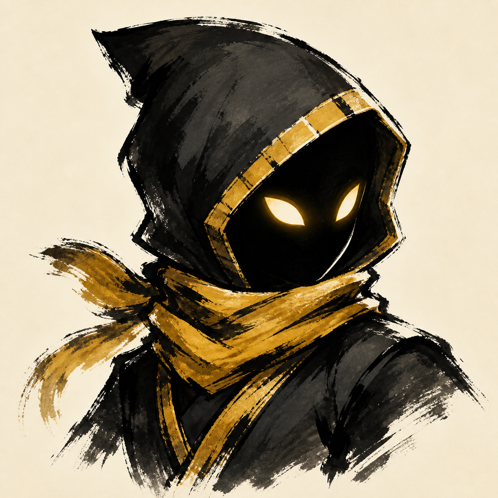
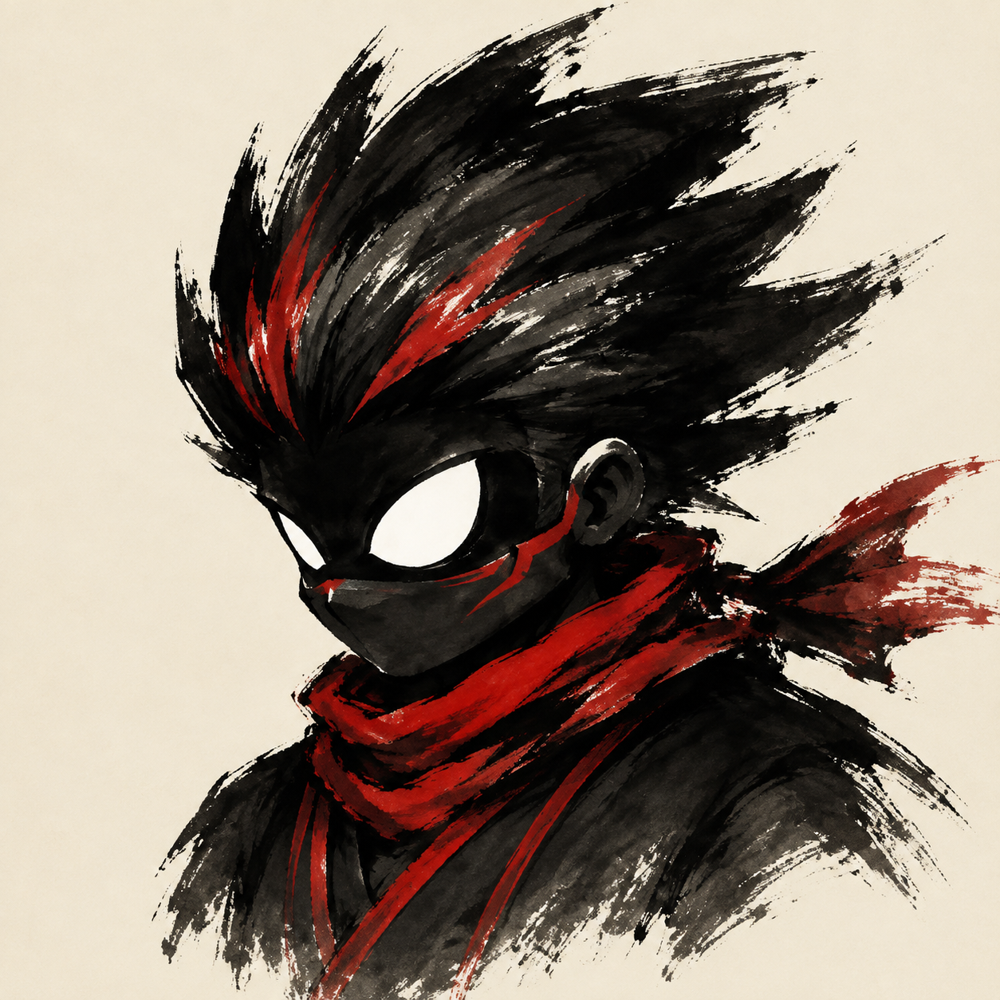
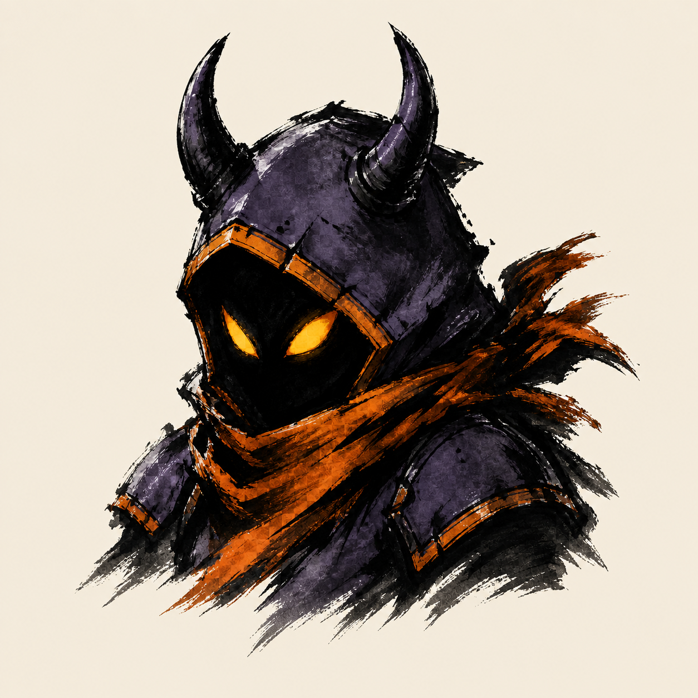
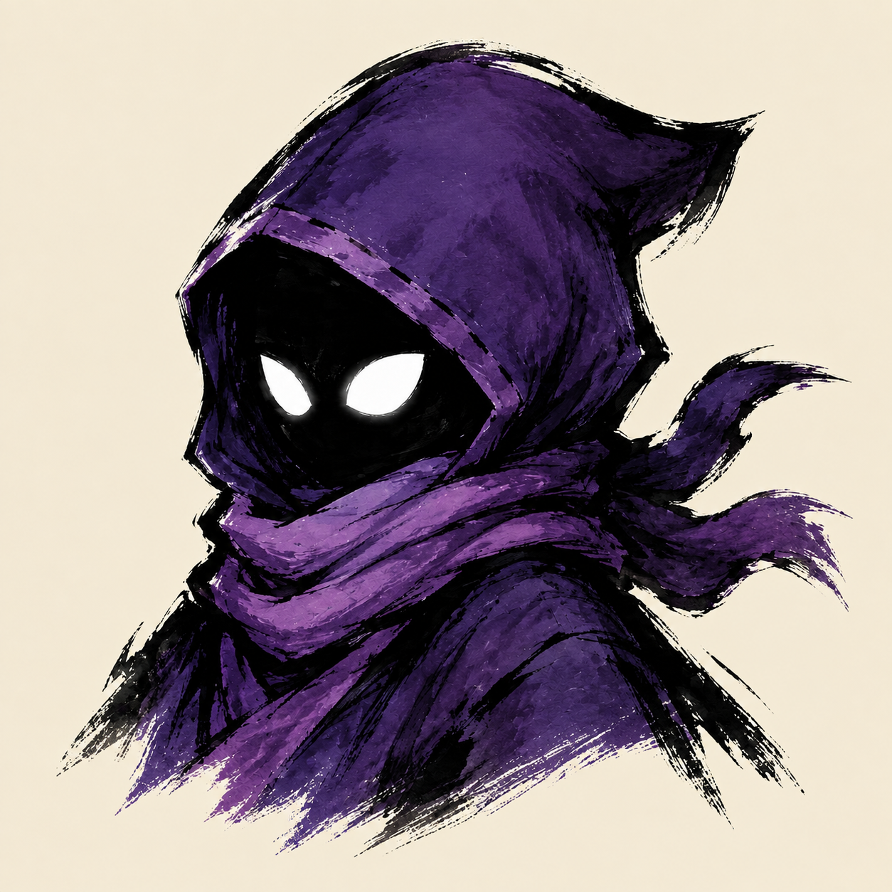
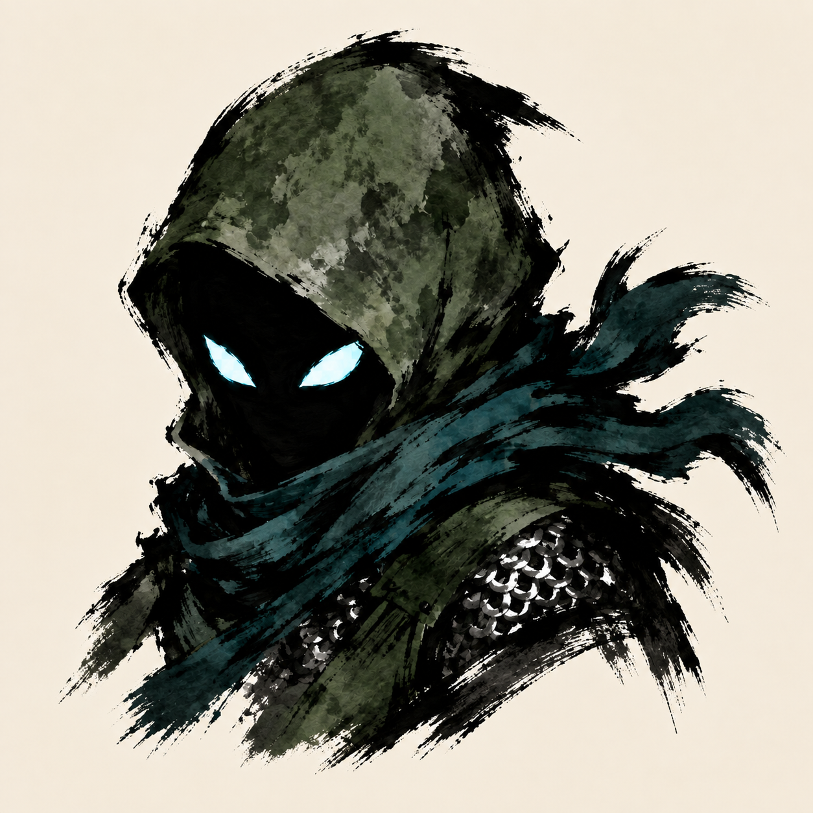
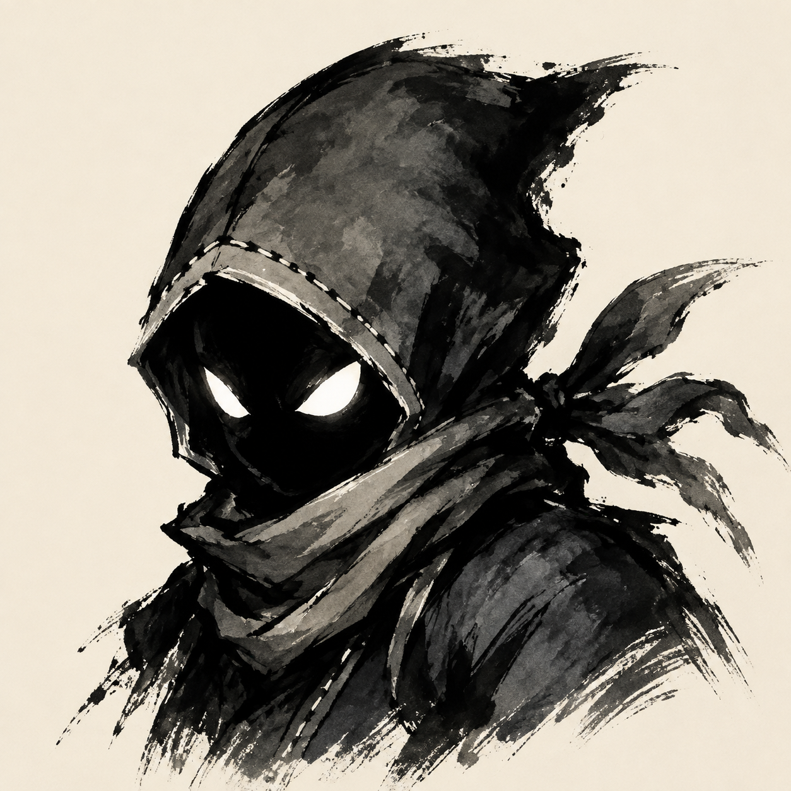
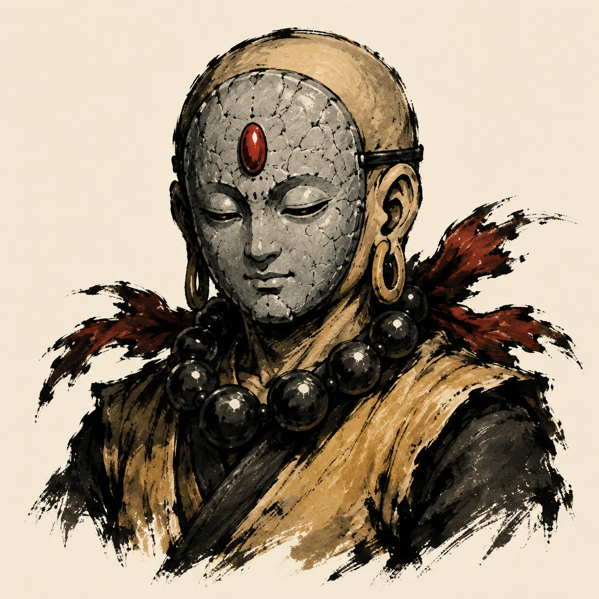
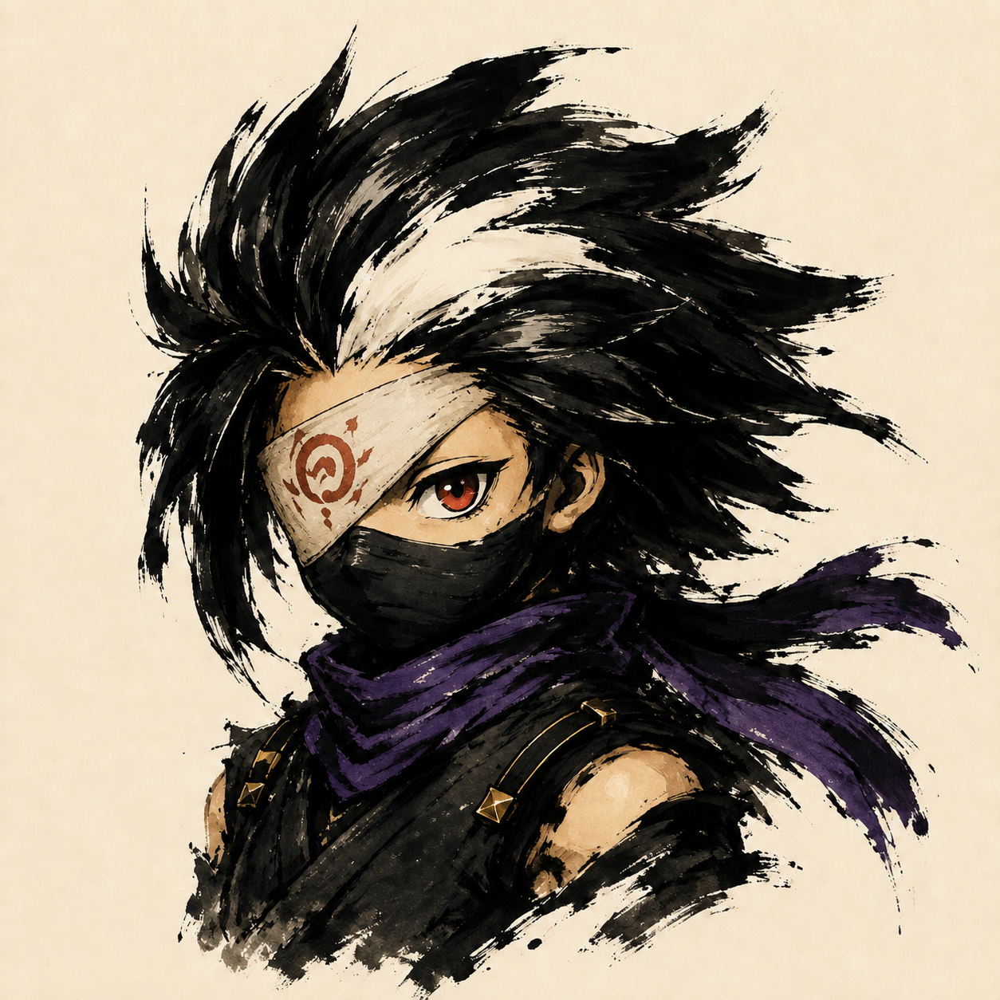
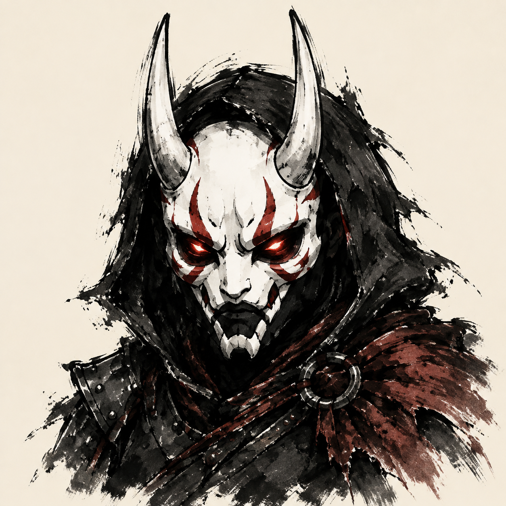

Nine fighters. Nine new ink portraits.
Newly drawn from the approved character references. Heavy calligraphic black strokes, individual signature colors, and an intentional ivory background. Each large selection-card preview is paired with a 64 × 64 fight-HUD preview.
All nine approved portraits are installed on the local :9101 game. Exile’s corrected right-eye cloth wrap supersedes her rejected two-eye portrait. These are opaque UI portraits, not transparent combat sprites.







